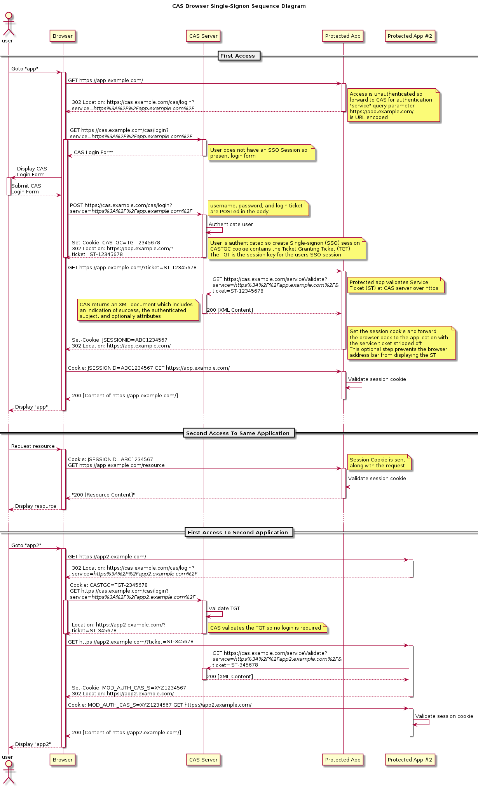

之前研究了一段时间的单点登录系统，在这里做一下流程上的总结吧。
先说下我对几个词的认识：我觉得 统一认证、单点登录、集中认证、统一登录 这几个词的想表达的目的都是一样的，都是提供一个登录中心或者叫认证中心的地方，当某个系统需要用户进行登录时，统一跳转到这里来进行处理。
进入正文：
假定一个场景，现在有系统A(a.com)、系统B(b.com)、和认证中心(sso.com)。我们想实现的效果是，其中一个系统登录一次后，访问其他系统的需要登录页面时无需再次手动提交帐号密码。
注意：我这里说的是无需再次输入帐号密码，内部的登录流程还是要执行的，只是不需要用户的参与。
下边是基于 CAS 的 SSO 的流程介绍：
用户通过浏览器访问系统A www.a.com/pageA，这个 pageA 是个需要登录才能访问的页面，系统A发现用户没有登录，这时候系统A需要做一个额外的操作，就是重定向到认证中心: www.sso.com/login?service=www.a.com/pageA。
这个 service 参数的作用其实可以认为是一个回跳的 url，将来通过认证后，还要重定向到系统A，所以其实用 redirect 可能更合适一些，但是在这里还有一个作用就是注册服务，简单来说注册服务为的是让我们的认证中心能够知道有哪些系统在我们这里完成过登录，其中一个重要目的是为了完成单点退出的功能，单点退出的一会我再来介绍。
接下来浏览器会用 www.sso.com/login?service=www.a.com/pageA 访问认证中心，认证中心一看没登录过，就会展示一个登录框让用户去登录，登录成功以后，认证中心要做几件重要的事情：
- 建立一个
session - 创建一个
ticket（可以认为是个随机字符串） - 重定向到系统A，同时把 ticket 放在 url 中：
www.a.com/pageA?ticket=T123与此同时之前建立 session 对应的 cookie 也会发送给浏览器，比如：Set cookie : ssoid=1234, sso.com
到这里会产生一个疑惑，为什么认证中心要写一个 cookie，其他系统由于跨域的限制根本读不到它啊。
对于这个问题的回答是， sso.com 产生的 cookie 不是给其他系统用的（至于是给谁用的一会会说明），注意那个 ticket，这个东西是个重要标识，系统拿到以后需要再次向认证中心验证。所以 ticket 才是系统们要用到的东西。
系统A拿着这个 ticket，去问下认证中心：这是您签发的 ticket 吗，认证中心确认无误后，系统A就可以认为用户在认证中心登录过了。这时候系统A应该为这个用户建立 session 然后返回 pageA 的资源。也就是说，系统A也需要给浏览器发一个属于自己的 cookie：Set cookie : sessionid=xxxx, a.com。这时候浏览器实际上有两个 cookie，一个是系统A发的，一个是认证中心发的。
当用户再次访问系统A的另一个需要登录的页面时，因为系统A已经在浏览器中放入了自己的cookie，就知道它登录过了，不需要再次到认证中心去了。
接下来看看，当用户访问系统A时已经通过认证中心登录了，再访问系统B www.b.com/pageB 时是什么样的情况。
其实和首次访问 www.a.com/pageA 非常类似，唯一不同就是不需要用户输入用户名密码来登录了，因为浏览器已经有了认证中心的 cookie，直接发送给 www.sso.com 就可以了。这里解释了我上边提到的认证中心写入浏览器 cookie 的用途。
同样，认证中心会返回 ticket，系统B需要做验证。
整个流程的本质是一个认证中心的 cookie，加上多个子系统的 cookie 而已。
下边来说说单点退出的原理。
单点退出的作用是用户在一个地方退出，所有系统都要进行退出。这怎么来实现呢。还记得我前边提到的注册服务吗？没错，就是使用之前登录时给认证中心传的 service 参数，认证中心记录下来都有哪些系统进行过登录，当用户访问认证中心的 /logout 需要退出的时候，认证中心需要把自己的会话和 cookie 干掉，然后给之前注册过那些服务的地址发送退出登录的请求，默认是对根路径发一个 POST 请求，Body 中携带一些字段，比如比如之前登录时用到的ticket，这时候各个子系统根据传过来的这个 ticket 来将对应的用户 session 干掉即可。
所以用户在系统A点击退出登录后，系统A取消本地会话然后重定向到认证中心的退出登录地址，剩下的交给认证中心来处理就好了。这里也可以传一个回跳地址参数，当认证中心完成退出后，可以再跳会到设置的地址。
我觉得用户在一个系统中退出登录时，系统此时结不结束会话其实都可以，因为最终还是要被认证中心调用一次退出。
说一个我做单点退出时遇到的坑，由于我把 CAS Server 部署在了机房中的一台设备上，然后在我本地启了一个 WEB 服务，这个时候登录填的 service 是 127.0.0.1:8081/xxx 登录完之后的重定向是没有问题的，但是当我访问 CAS Logout 页面后，再访问我的系统，发现并没有退出登录，也没有访问退出登录的记录。原因是我注册服务时的 127.0.0.1 这个url认证中心根本访问不到。
后来我在本地起了一个 CAS Server 再次验证后没有问题。
还有人问道那个 ticket 如果被其他人截获了，岂不是就可以冒充我来登录了？并不会。
首先来说，默认情况下，CAS 要求子系统和它之间的通讯为 https ，再有就是这个 ticket 只有一次有效性，验证一次后即失效，而且有效期还很短，默认我记得只有5秒。最重要的是即便这个 ticket 被其他人获取了也没啥用，验证这个 ticket 时，还需要带上申请这个 ticket 时的 url 信息，而且认证中心鉴定 ticket 为真后也只是返回用户的用户名、认证时间等最基本的信息，由于子系统没有拿到这些信息，所以对于子系统来说，你还是没有登录的。
最后敬上官方的 CAS 协议流程图
